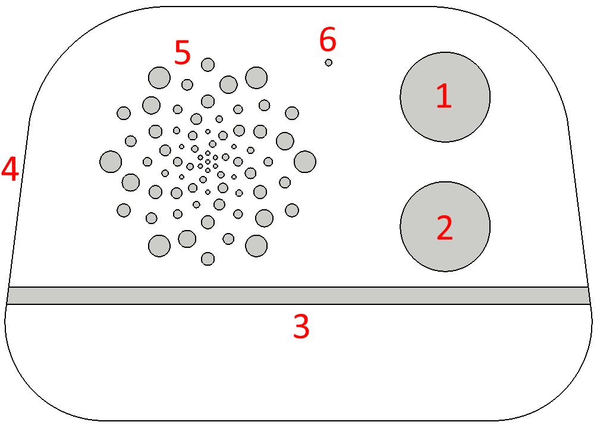

This is a simple MP3 player and FM radio for kids. Playback functions can be controlled via the knobs while more complex features can be controlled from the player's web interface. These are the features in a nutshell:
- MP3 playback, up to 96kbps stereo
- FM radio (integrated antenna)
- Disco mode (replays recorded sound on a pop music background)
- Walkie-Talkie mode when two players, or player & phone can send voice messages via Telegram
- Integrated speaker or stereo headphones
- Configurable lights strip (breathe, larson scanner, music visualization, etc.)
- Alarm (any time, any day, any mp3, snooze function)
- Greetings (set of 3 welcome messages that will be played upon powering up the player at a specific day, such as birthdays
- Web Interface for advance controls

The player has the following controls: Control knob (1) and Volume knob (2). Other elements are: LED strip (3), USB-C port for charging and headphone jack from the side (4), speaker (5) and microphone (6).
Press either control (1) or volume (2) knob for approximately 2 seconds, until the LED strip flashes white to power the player on. Afterwards battery level will be displayed in red and the last music mode (mp3, radio, disco) will start playback. The player turns itself off automatically after 5 minutes when idle, or 30 minutes when playing music.
The player operates in 5 distinct modes, summarized below:
Details for each mode are described in the appropriate Web UI settings. The table below then summarizes the effect of various controls in the modes:
| Action |
MP3 Mode |
Radio Mode |
Disco Mode |
Lights Mode |
Walkie-Talkie Mode |
| Control Turn |
Selects track within playlist |
Manual radio tuning |
|
Selects lights color |
Selects received message to play |
| Control Press |
Cycles through playlists |
Cycles through preset stations |
Plays/Stops the recorded disco. |
Cycles through lights effect |
Plays/stops received messages |
| Control Long Press |
Moves to next music mode (MP3,Radio,Disco) |
Returns to last music mode. |
| Volume Turn |
Sets volume |
| Volume Press |
Play/Pause |
Starts recording when pressed, stops recording and sends/replays when released |
| Volume Long Press |
Enters the lights settings mode. |
|
Returns to the previous music mode |
|
| Double Long Press |
Turns on the WiFi and starts the web UI. Enters walkie-talkie mode. |
|
Turns off the WiFi and returns to the previous music mode. |